| id | age | academic_pressure | work_pressure | cgpa | study_satisfaction | job_satisfaction | work/study_hours | financial_stress | depression | |
|---|---|---|---|---|---|---|---|---|---|---|
| count | 140700.00 | 140700.00 | 27897.00 | 112782.00 | 27898.00 | 27897.00 | 112790.00 | 140700.00 | 140696.00 | 140700.00 |
| mean | 70349.50 | 40.39 | 3.14 | 3.00 | 7.66 | 2.94 | 2.97 | 6.25 | 2.99 | 0.18 |
| std | 40616.74 | 12.38 | 1.38 | 1.41 | 1.46 | 1.36 | 1.42 | 3.85 | 1.41 | 0.39 |
| min | 0.00 | 18.00 | 1.00 | 1.00 | 5.03 | 1.00 | 1.00 | 0.00 | 1.00 | 0.00 |
| 25% | 35174.75 | 29.00 | 2.00 | 2.00 | 6.29 | 2.00 | 2.00 | 3.00 | 2.00 | 0.00 |
| 50% | 70349.50 | 42.00 | 3.00 | 3.00 | 7.77 | 3.00 | 3.00 | 6.00 | 3.00 | 0.00 |
| 75% | 105524.25 | 51.00 | 4.00 | 4.00 | 8.92 | 4.00 | 4.00 | 10.00 | 4.00 | 0.00 |
| max | 140699.00 | 60.00 | 5.00 | 5.00 | 10.00 | 5.00 | 5.00 | 12.00 | 5.00 | 1.00 |
Mental Health
ITAM - Aprendizaje de Máquina
Predicción de Depresión en Adultos
Un enfoque con machine learning
1. Definición del proyecto
1.1. Introducción
La depresión es un trastorno del estado de ánimo que afecta cómo una persona se siente, piensa y maneja las actividades diarias, como dormir, comer o trabajar. Va más allá de sentirse triste o desanimado ocasionalmente; es una condición persistente que puede durar semanas, meses o incluso años.
Algunos síntomas comunes de la depresión van desde los emocionales hasta los físicos y cognitivos, y pueden variar en intensidad de una persona a otra. Algunos de los síntomas más comunes incluyen:
- Emocionales:
- Tristeza profunda o sensación de vacío.
- Pérdida de interés o placer en actividades que solían disfrutarse.
- Sentimientos de culpa, inutilidad o desesperanza.
- Físicos:
- Cambios en el apetito o el peso.
- Problemas de sueño (insomnio o dormir en exceso).
- Fatiga constante o falta de energía.
- Cognitivos:
- Dificultad para concentrarse, pensar o tomar decisiones.
- Pensamientos recurrentes de muerte o suicidio.
Según la OMS (Organización Mundial de la Salud), la depresión es una de las principales causas de discapacidad en todo el mundo y afecta a personas de todas las edades. Aproximadamente el 5% de los adultos en todo el mundo padecen depresión, lo que equivale a cerca de 280 millones de personas. La depresión es más frecuente en mujeres (6%) que en hombres (4%). En 2020, se estimó que más de 264 millones de personas en todo el mundo padecían depresión, lo que representa un aumento del 18% en la última década. La depresión puede tener un impacto significativo en la calidad de vida de las personas, afectando su bienestar emocional, social y físico.
Es esencial promover la detección temprana y el acceso a tratamientos efectivos para reducir el impacto de la depresión en la sociedad. El aprendizaje de máquina ofrece una oportunidad para analizar y predecir la depresión en adultos, utilizando datos recopilados de encuestas y cuestionarios.
1.2. Descripción general del proyecto
En este proyecto, abordaremos la tarea de predecir la variable objetivo Depresión utilizando un conjunto de datos titulado Salud Mental. Este dataset fue extraído de Kaggle, mismo que fue el resultado de una encuesta integral cuyo propósito fue analizar los factores asociados al riesgo de depresión en adultos. La encuesta incluyó preguntas sobre diversos aspectos de la vida de los participantes, como presión académica, satisfacción laboral, hábitos de sueño y alimentación, entre otros.
La encuesta fue llevada a cabo de manera anónima entre enero y junio de 2023 en diversas ciudades, involucrando a personas de diferentes orígenes y profesiones.
Los participantes, con edades entre 18 y 60 años, compartieron voluntariamente información sobre una amplia variedad de aspectos, tales como edad, género, ciudad de residencia, entre otros.
1.3. Objetivos
El análisis de este conjunto de datos, permitirá explorar y modelar las relaciones entre las variables predictoras y la variable objetivo, contribuyendo así a un mejor entendimiento del impacto de diversos factores en la salud mental.
Los objetivos específicos de este proyecto son:
- Realizar un análisis exploratorio de los datos para comprender la distribución y relaciones entre las variables.
- Realizar ingeniería de características para mejorar la representación de los datos y el desempeño del modelo.
- Entrenar un modelo de machine learning para predecir la depresión en adultos.
- Evaluar el desempeño del modelo y analizar la importancia de las características en la predicción.
1.4. Métricas de Evaluación
Para evaluar el desempeño del modelo, utilizaremos la métrica de precisión (accuracy).
Con ella se medirá la proporción de predicciones correctas en relación con el total de predicciones realizadas.
Dado que la variable objetivo está desbalanceada, la precisión proporcionará una medida general del rendimiento del modelo, considerando tanto los casos positivos como los negativos.
2. Exploratory data analysis (EDA)
Es esta sección, se presentará el resultado del análisis exploratorio de los datos.
2.1. Características del dataset
El dataset está compuesto por 20 variables, descritas a continuación:
| Variable | Descripción |
|---|---|
id |
Identificador único del registro |
Nombre |
Nombre del participante |
Género |
Género del participante |
Edad |
Edad del participante |
Ciudad |
Ciudad de residencia |
Profesionista/Estudiante |
Ocupación principal |
Profesión |
Campo laboral o académico |
Presión_académica |
Nivel de presión relacionado con los estudios |
Presión_laboral |
Nivel de presión relacionado con el trabajo |
CGPA |
Promedio general acumulado |
Satisfacción_académica |
Nivel de satisfacción con los estudios |
Satisfacción_laboral |
Nivel de satisfacción con el trabajo |
Tiempo_dormir |
Horas promedio de sueño por día |
Hábitos_alimenticios |
Calidad percibida de los hábitos alimenticios |
Grado_académico |
Nivel más alto de educación alcanzado |
Pensamientos_suicidas |
Indicadores de pensamientos suicidas |
Horas_estudio/trabajo |
Promedio de horas dedicadas a estudio o trabajo |
Estrés_financiero |
Percepción de presión financiera |
Antecedente_familiar_enfermedad_mental |
Presencia de antecedentes familiares de enfermedad mental |
Depresión |
Indicador binario de depresión (variable objetivo) |
2.2. Shape de los datasets
Los datasets de train y test tienen la siguiente estructura:
| Dataset | Rows | Columns |
|---|---|---|
| Train | 14,0700 | 20 |
| Test | 93,800 | 19 |
Cabe destacar que el conjunto de test, no incluye la variable objetivo para la predicción (Depression).
2.3. Variables y tipo de datos
Variables numéricas
- El análisis exploratorio de las variables numéricas revela que las relacionadas con satisfacción, presión y estrés están en una escala de 1 a 5, con medias cercanas a 3.
- La edad de los participantes oscila entre 18 y 60 años, con una media de 40.4, mientras que las horas de trabajo/estudio tienen una media de 6.25 horas diarias.
- El rendimiento académico (
CGPA) muestra valores altos, con una media de 7.66. La variable objetivo,Depression, indica que alrededor del 18% de los participantes presenta riesgo de depresión.
Variables categóricas
| name | gender | city | working_professional_or_student | profession | sleep_duration | dietary_habits | degree | have_you_ever_had_suicidal_thoughts_? | family_history_of_mental_illness | |
|---|---|---|---|---|---|---|---|---|---|---|
| count | 140700 | 140700 | 140700 | 140700 | 104070 | 140700 | 140696 | 140698 | 140700 | 140700 |
| unique | 422 | 2 | 98 | 2 | 64 | 36 | 23 | 115 | 2 | 2 |
| top | Rohan | Male | Kalyan | Working Professional | Teacher | Less than 5 hours | Moderate | Class 12 | No | No |
| freq | 3178 | 77464 | 6591 | 112799 | 24906 | 38784 | 49705 | 14729 | 71138 | 70758 |
- En cuanto a las variables categóricas, destacan 98 ciudades únicas y 64 profesiones, con “Teacher” como la más común.
- Duraciones de sueño como “Less than 5 hours” son las más reportadas, mientras que los antecedentes familiares de enfermedad mental y pensamientos suicidas tienen predominancia de respuestas negativas.
- Estos resultados iniciales subrayan la diversidad del dataset y señalan áreas clave para el tratamiento de datos, como los valores nulos y categorías con alta cardinalidad.
2.4. Descripción de variable objetivo
::: {#cell-target variable dist .cell execution_count=6}
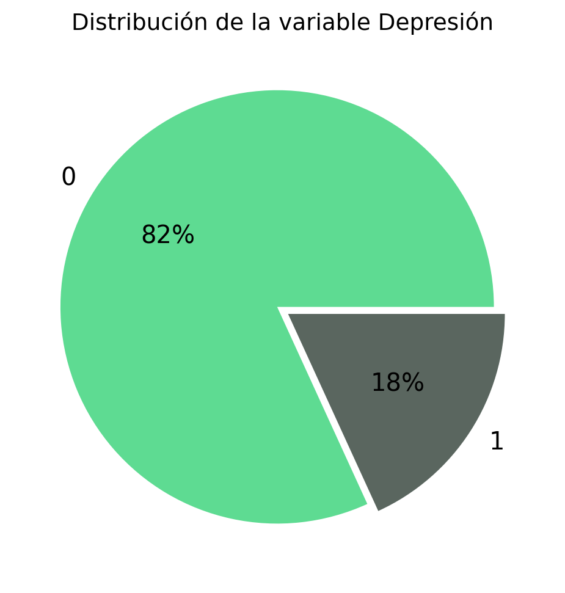
:::
El análisis de la variable objetivo
depressionrevela un conjunto de datos desbalanceado, donde aproximadamente el 82% de los registros corresponden a individuos sin depresión y solo el 18% a casos positivos. Esta desigualdad es visualmente evidente en la gráfica de distribución.El desbalance en la variable objetivo establece un desafío en el modelado predictivo, ya que los modelos pueden inclinarse hacia la clase mayoritaria. Sin embargo, también sugiere que un punto de referencia inicial para la métrica de precisión (accuracy) debe superar el 82%, ya que ese sería el desempeño esperado al predecir siempre la clase mayoritaria.
2.5. Valores Nulos
::: {#cell-NA check .cell execution_count=7}
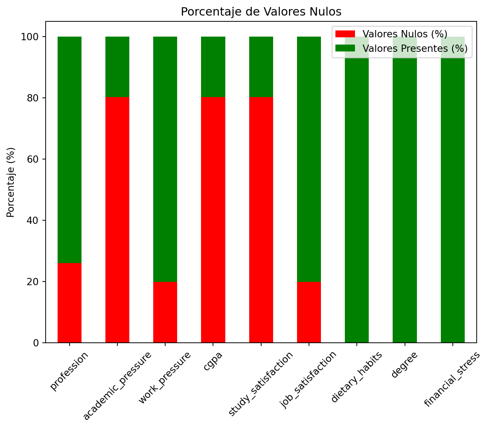
:::
En particular, las variables relacionadas con estudiantes, como
academic_pressure,cgpa, ystudy_satisfaction, presentan hasta un 80% de valores nulos. Este resultado refleja una menor representación de estudiantes en comparación con profesionistas dentro del dataset.A pesar del alto porcentaje de valores faltantes en estas variables, no se eliminarán del análisis, ya que contienen información valiosa para los casos específicos de estudiantes. Este enfoque permite preservar datos que pueden ser relevantes en el desarrollo del modelo predictivo, especialmente para evaluar las diferencias entre grupos ocupacionales.
Las estrategias de imputación y tratamiento de valores nulos serán fundamentales para garantizar la calidad del análisis posterior.
2.6. Visualizaciones
En esta sección, se presentará el análisis visual de las variables del dataset con ayuda de gráficos.
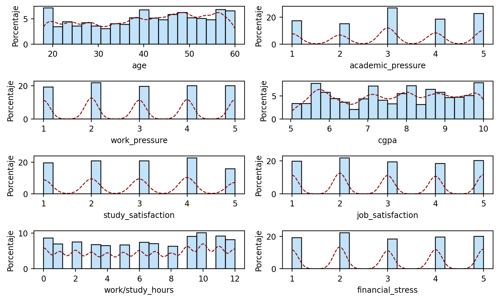
- Con estos histogramas podemos analizar las distribuciones de los datos y detectar patrones o anomalías en las características numéricas, e identificar las que en realidad son categóricas.
Para la variable de
agela distribución es aproximadamente uniforme, aunque hay un ligero aumento en la frecuencia en el rango de los 40 años.Para las variables como
academic_pressure,work_pressure,study_satisfaction,job_satisfactionyfinancial_stresslas distribuciones son multimodales, lo que nos indica que están influenciadas por factores externos que generan diferentes “grupos” y podemos considerarlas como categóricas ya que probablemente en la encuesta manejaron las variables en escala del 1 al 5.
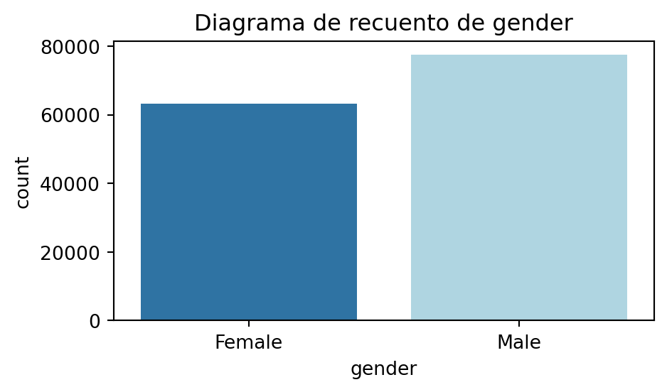
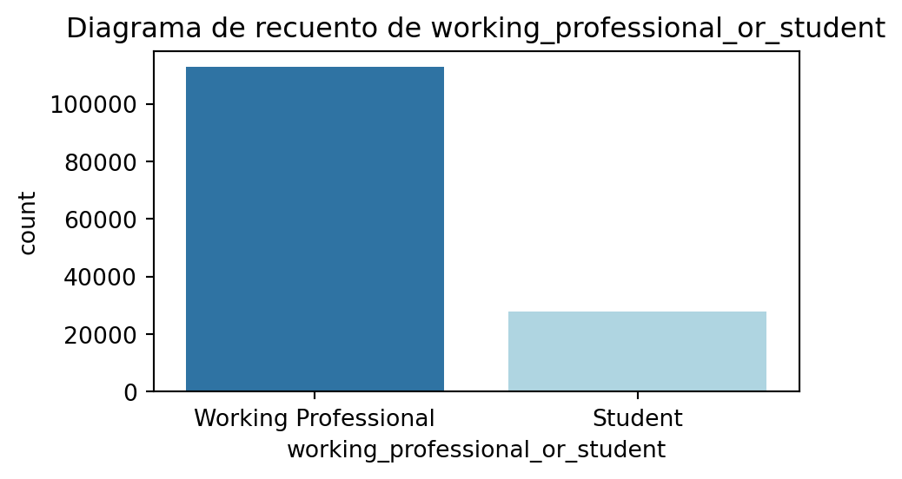
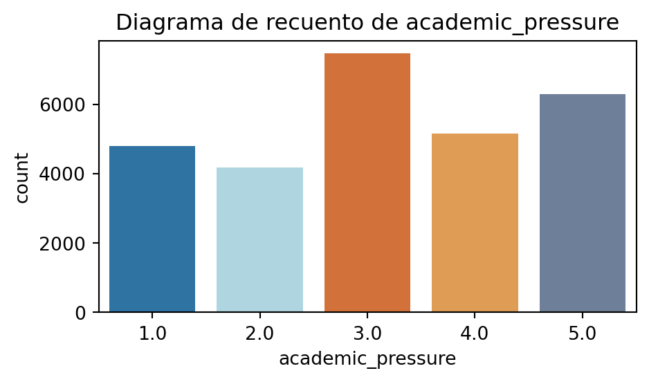
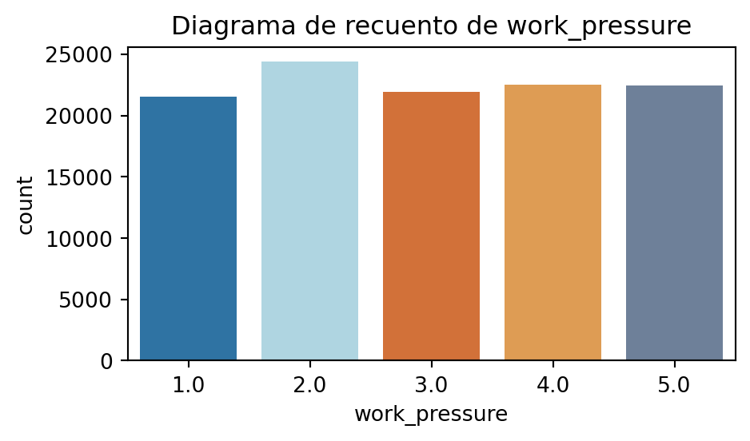
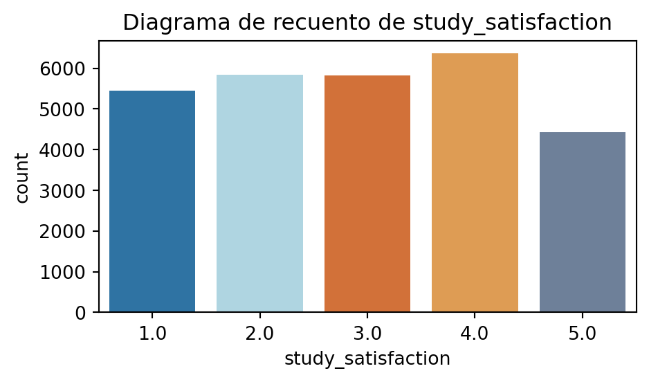
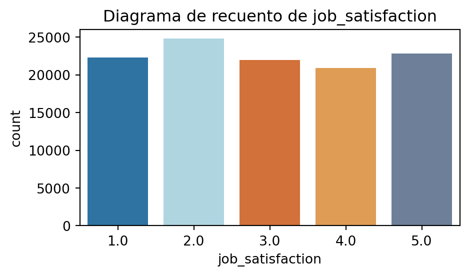
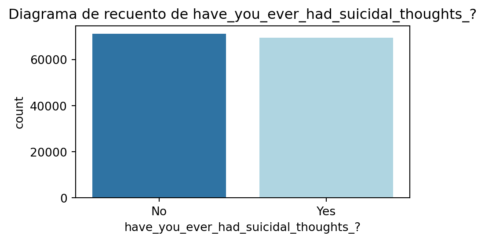
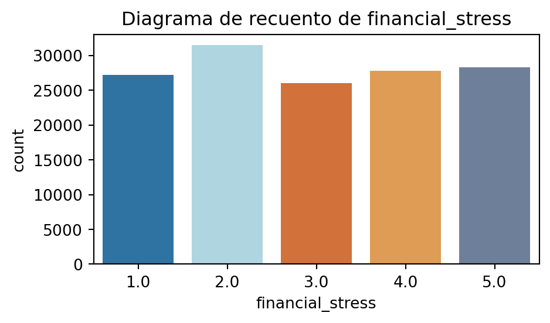
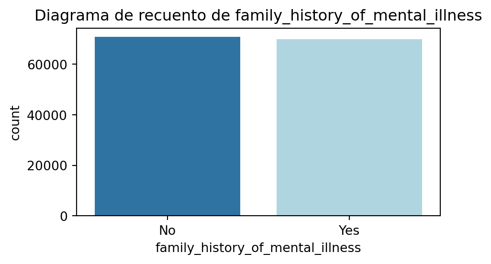
El dataset, muestra una mayor representación de hombres en comparación con mujeres, con una significativa mayoría perteneciente a la categoría de profesionales que trabajan.
Los hábitos alimenticios de las personas son diversos, distribuidos entre categorías moderadas, saludables y no saludables de manera bastante equilibrada.
En cuanto a los patrones de sueño, la mayoría de los individuos reportan dormir entre 5 y 8 horas por noche, lo que se encuentra dentro de un rango considerado saludable. Esto refleja una tendencia general hacia comportamientos de vida relativamente equilibrados.
Un análisis sobre los aspectos de salud mental revela cifras preocupantes. Una proporción significativa de la población reporta haber tenido pensamientos suicidas, con una distribución casi equilibrada entre respuestas afirmativas y negativas.
Además, aproximadamente la mitad de las personas indican antecedentes familiares de enfermedades mentales. Estas estadísticas resaltan la importancia de investigar más a fondo los factores asociados con la salud mental.
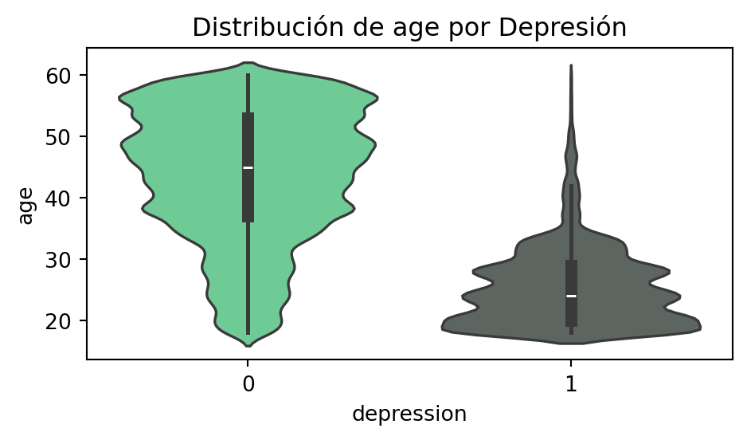
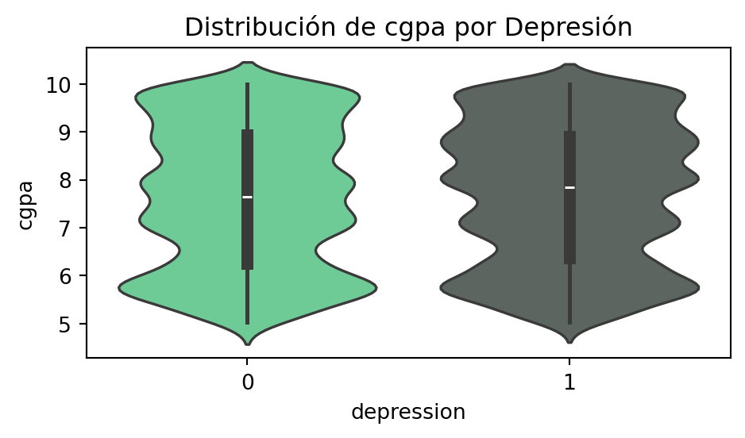
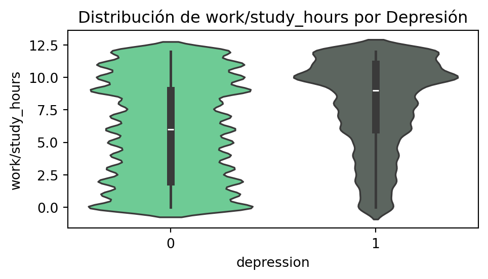
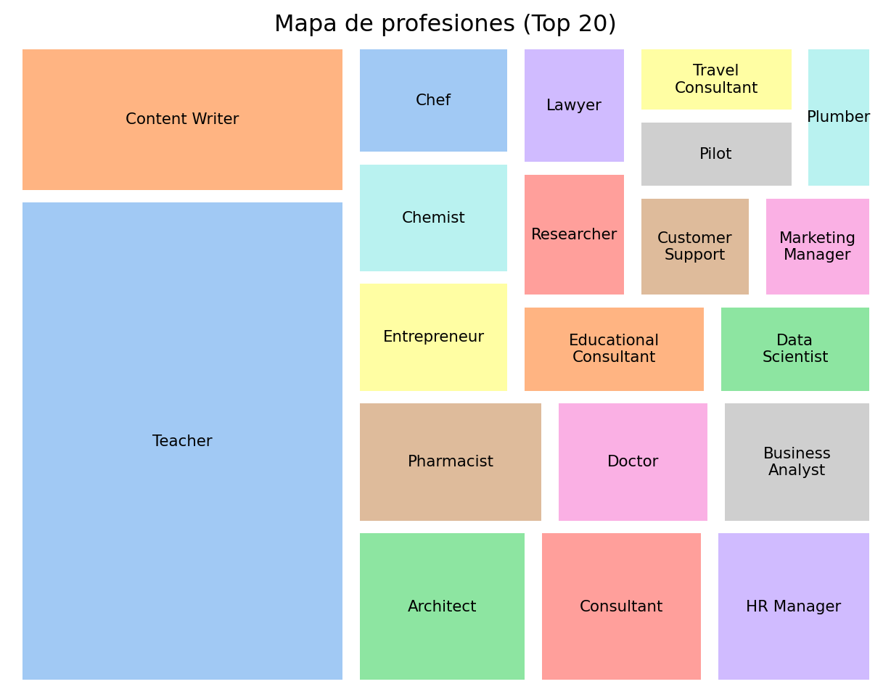
- En cuanto a ocupaciones, destaca una alta proporción de personas en el sector educativo, específicamente profesores, que constituyen la profesión predominante.
3. Preprocesamiento de datos
3.1 Ingenieria de Variables
Se añadieron características derivadas para enriquecer el dataset y mejorar el análisis. Estas incluyen:
satisfaction_by_work: Relación entre presión laboral y satisfacción en el trabajo.satisfaction_by_study: Relación entre presión y satisfacción académica.age_work_satisfaction: Razón entre edad y satisfacción laboral.cgpa_study: Relación entre promedio académico y presión académica.
Estas nuevas variables buscan capturar interacciones clave, como el impacto de la presión en la satisfacción o el desempeño bajo diferentes condiciones, y tienen el potencial de mejorar el modelo predictivo. Las varibales se crean con la siguiente función:
def new_feats(df):
df = (
df.assign(satisfaction_by_work=df["work_pressure"] / df["job_satisfaction"])
.assign(
satisfaction_by_study=df["academic_pressure"] / df["study_satisfaction"]
)
.assign(age_work_satisfaction=df["age"] / df["job_satisfaction"])
.assign(cgpa_study=df["cgpa"] / df["academic_pressure"])
)
return df
train = new_feats(train).copy()
test = new_feats(test).copy()Dado que algunas variables categóricas presentan un gran número de categorías únicas, se implementó una estrategia para agrupar las categorías menos representativas en una etiqueta denominada “Other”. Esto asegura que las categorías seleccionadas representen al menos el 90% de los datos, reduciendo la dimensionalidad y facilitando el análisis.
Las columnas ajustadas incluyen:
cityprofessionsleep_durationdietary_habitsdegree
Esta transformación permite simplificar la estructura del dataset sin perder información relevante, mejorando la manejabilidad del modelo y reduciendo el riesgo de sobreajuste debido a categorías con baja frecuencia.
train["city"], test["city"] = group_low_frequency(train, test, 'city', 0.9)
train["profession"], test["profession"] = group_low_frequency(train, test, 'profession', 0.9)
train["sleep_duration"], test["sleep_duration"] = group_low_frequency(train, test, 'sleep_duration', 0.9)
train["dietary_habits"], test["dietary_habits"] = group_low_frequency(train, test, 'dietary_habits', 0.9)
train["degree"], test["degree"] = group_low_frequency(train, test, 'degree', 0.9)Tras la agrupación, las variables categóricas principales quedan resumidas con las categorías más representativas
| city | profession | sleep_duration | dietary_habits | degree | |
|---|---|---|---|---|---|
| count | 140700 | 140700 | 140700 | 140700 | 140700 |
| unique | 26 | 27 | 4 | 3 | 23 |
| top | Other | Other | Less than 5 hours | Moderate | Other |
| freq | 17198 | 47065 | 38784 | 49705 | 15386 |
3.2 Relación variables categóricas y Depresión
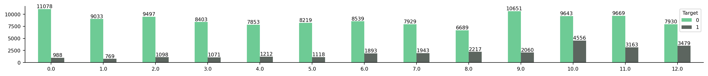
El análisis gráfico de la variable work/study_hours muestra un patrón interesante: a medida que aumentan las horas dedicadas al trabajo o estudio, también aumenta la proporción de casos con indicadores de depresión.

Los resultados muestran que más de la mitad de los estudiantes en el dataset tienen indicadores de depresión. Esto resalta una diferencia notable en comparación con los profesionales, sugiriendo que el entorno académico puede ser un factor de estrés significativo.
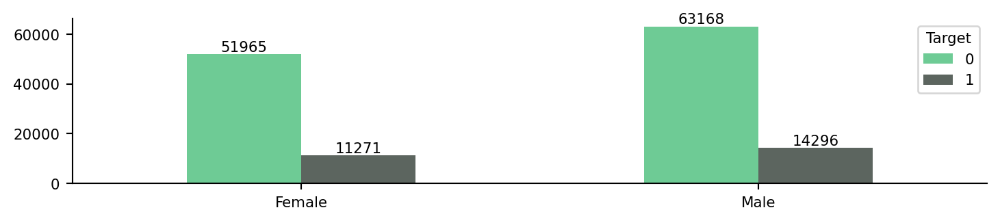
Aunque hay más hombres con depresión en términos absolutos, los porcentajes de depresión entre hombres y mujeres son similares, alrededor del 18%. Esto indica que la distribución de la variable objetivo no presenta un sesgo significativo entre géneros.
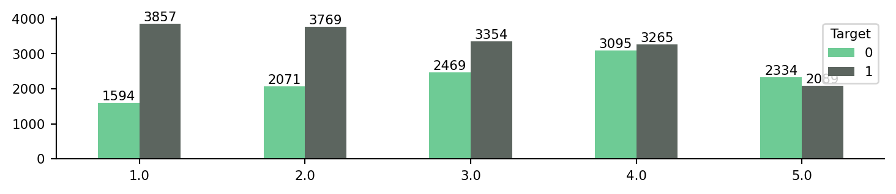
Se observa una clara relación inversa entre la satisfacción en los estudios y la propensión a la depresión. A menor satisfacción académica, mayor es la proporción de casos positivos de depresión, lo que refuerza la importancia del bienestar en el ámbito educativo.
3.3 Mapa de correlación entre variable numéricas
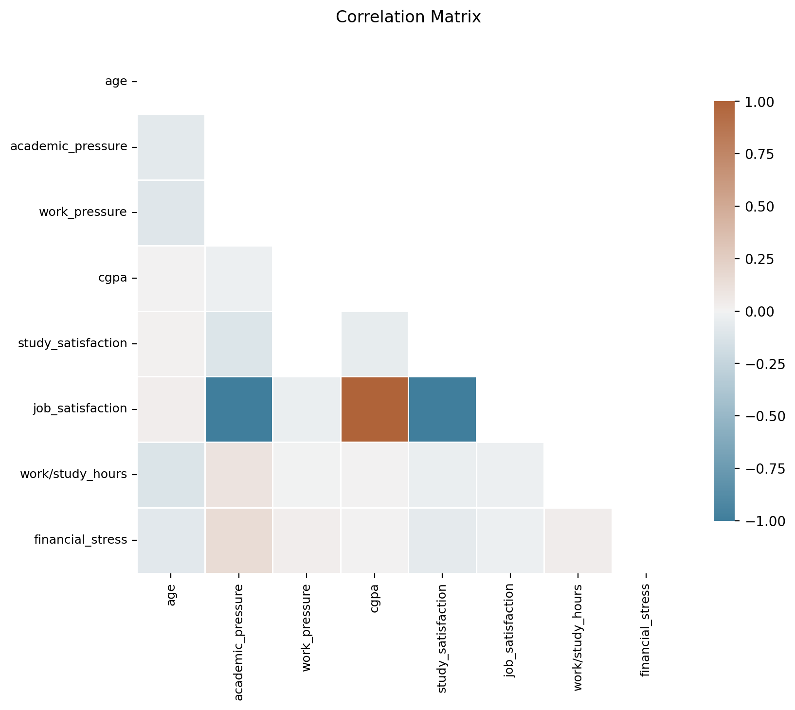
4. Algoritmos y Modelado
4.1 CatBoost
CatBoost es un algoritmo de aprendizaje automático basado en árboles de decisión que utiliza técnicas avanzadas de boosting. Es especialmente útil para trabajar con datos categóricos, ya que implementa un manejo eficiente de estas variables mediante codificación automática, lo que reduce la necesidad de preprocesamiento adicional. Además, CatBoost es conocido por su capacidad de minimizar el riesgo de sobreajuste y su alto desempeño en tareas de clasificación y regresión.
Elegimos CatBoost para este ejercicio debido a la naturaleza del dataset, que contiene una combinación de variables numéricas y categóricas. Su capacidad para procesar variables categóricas de forma nativa, junto con su robustez frente al desbalance de datos, lo hace ideal para predecir nuestra variable objetivo, depression, en un conjunto de datos con estructuras y distribuciones complejas. Además, el rendimiento competitivo de CatBoost en comparación con otros algoritmos de boosting lo convierte en una opción sólida para este tipo de problema.
Para entrenar el modelo, el dataset se preprocesó llenando valores faltantes con “0” y ajustando los tipos de datos según la naturaleza de las variables (numéricas, categóricas y objetivo). Posteriormente, se dividieron los datos en conjuntos de entrenamiento y prueba, utilizando el 70% de los datos para entrenamiento y el 30% para prueba. Este procedimiento garantiza una evaluación justa del modelo, preservando datos no vistos para validar su desempeño y evitar el sobreajuste.
----------X Shape---------
(140700, 23)
*************************************
----------y Shape------------
(140700,)En este paso, utilizamos Optuna, una biblioteca eficiente para la optimización de hiperparámetros, con el objetivo de encontrar la mejor configuración para el modelo de CatBoostClassifier. La función de optimización busca maximizar el desempeño del modelo en términos de precisión (accuracy) utilizando un enfoque basado en validación cruzada. Espacio de Búsqueda
El espacio de búsqueda incluye los siguientes hiperparámetros:
def objective(trial):
# Espacio de búsqueda para los hiperparámetros
params = {
'iterations': trial.suggest_int('iterations', 100, 1000),
'learning_rate': trial.suggest_float('learning_rate', 0.01, 0.3),
'depth': trial.suggest_int('depth', 4, 10),
'colsample_bylevel': trial.suggest_float('colsample_bylevel', 0.5, 1.0),
'subsample': trial.suggest_float('subsample', 0.5, 1.0),
'min_data_in_leaf': trial.suggest_int('min_data_in_leaf', 1, 10),
'l2_leaf_reg': trial.suggest_float('l2_leaf_reg', 1.0, 20.0),
'random_strength': trial.suggest_float('random_strength', 0.0, 1.0),
}
# Modelo de CatBoost
model = CatBoostClassifier(**params, cat_features=list(obj_feats), verbose=False)
# Evaluación usando validación cruzada
score = cross_val_score(model, X_train, y_train, cv=3, scoring='accuracy').mean()
return scoreFunción Objetivo
La función objetivo se define como el promedio de la precisión obtenida mediante validación cruzada con 3 particiones (\(k=3\)):
\[\text{Score} = \frac{1}{k} \sum_{i=1}^{k} \text{Accuracy}(i)\]
Donde \(\text{Accuracy}(i)\) es la precisión en el \(i\)-ésimo fold de la validación cruzada. El modelo de CatBoost se entrena y evalúa en cada iteración con una combinación específica de hiperparámetros sugerida por Optuna.
best_params = {'iterations': 633,
'learning_rate': 0.18918646362839026,
'depth': 4,
'colsample_bylevel': 0.9909843814690833,
'subsample': 0.9778634549619083,
'min_data_in_leaf': 1,
'l2_leaf_reg': 10.504885456201343,
'random_strength': 0.664861942866057}cat_interp = CatBoostClassifier(**best_params, verbose=True, cat_features=X[obj_feats].columns.values, early_stopping_rounds=200)
cat_cv_last = StratifiedKFold(20, shuffle=True, random_state=42)
cat_cv_splits = cat_cv_last.split(X, y)
acc_scores = []
last_test_df_preds = []
cat_features = X[obj_feats].columns.values
X[cat_features] = X[cat_features].fillna('nan').astype(str)
X_test_df_pool = Pool(test, cat_features=X[obj_feats].columns.values)
for i, (full_train_idx, valid_idx) in enumerate(cat_cv_splits):
model_fold = CatBoostClassifier(**best_params)
X_train_fold, X_valid_fold = X.loc[full_train_idx], X.loc[valid_idx]
y_train_fold, y_valid_fold = y.loc[full_train_idx], y.loc[valid_idx]
X_train_pool = Pool(X_train_fold, y_train_fold, cat_features=X[obj_feats].columns.values)
X_valid_pool = Pool(X_valid_fold, y_valid_fold, cat_features=X[obj_feats].columns.values)
model_fold.fit(X=X_train_pool, eval_set=X_valid_pool, verbose=False, early_stopping_rounds=100)
valid_pred = model_fold.predict(X_valid_pool)
score = accuracy_score(y_valid_fold, valid_pred)
acc_scores.append(score)
test_df_pred = model_fold.predict_proba(X_test_df_pool)[:, 1]
last_test_df_preds.append(test_df_pred)
print(f'Fold {i + 1} Accuracy Score: {score}')Fold 1 Accuracy Score: 0.9383
Fold 2 Accuracy Score: 0.9420
Fold 3 Accuracy Score: 0.9375
Fold 4 Accuracy Score: 0.9389
Fold 5 Accuracy Score: 0.9419
Fold 6 Accuracy Score: 0.9407
Fold 7 Accuracy Score: 0.9396
Fold 8 Accuracy Score: 0.9429
Fold 9 Accuracy Score: 0.9403
Fold 10 Accuracy Score: 0.9395
from sklearn.metrics import classification_report
print(classification_report(y_valid_fold, valid_pred))8. Referencias
- Organización Mundial de la Salud (OMS). (2023). Depression. Recuperado de https://www.who.int/es/news-room/fact-sheets/detail/depression